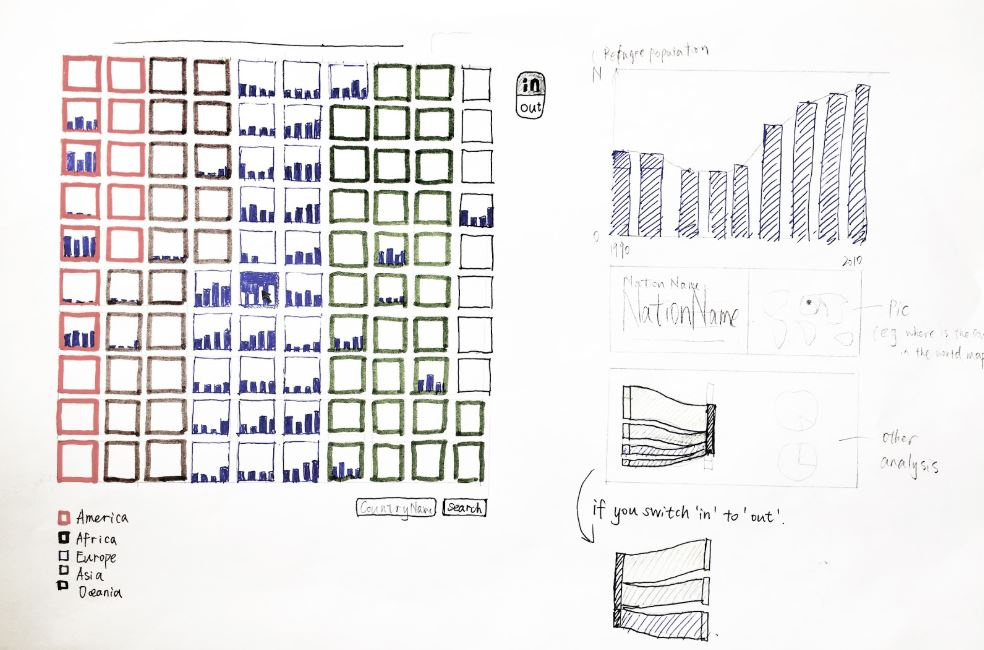
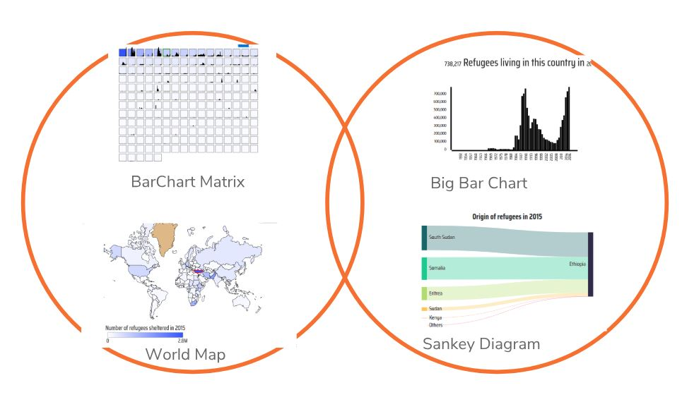
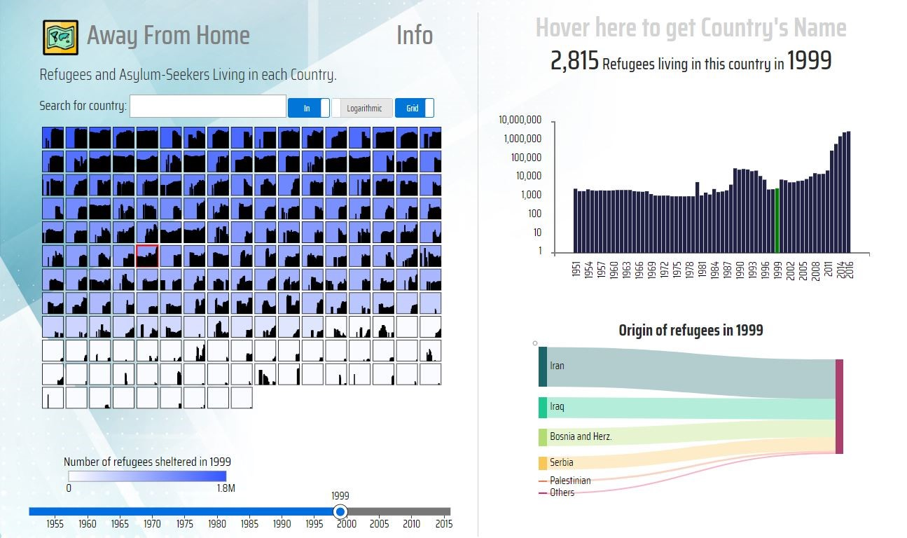

Interactive visualization tool for analyzing and raising awareness of the refugee crisis which provides an unbiased portrayal of the data.
There are approximately 22.5 million refugees in the World according to the UNHCR. A staggering number, and a number that fluctuates over time. The origin and destination of the refugees vary depending on the conflicts that occur over time. We wanted to visualize the human population that are refugees at any given year between 1951 and 2016. How many are there? Where are they from and where do they go? Our goal is to visualize the issues of refugee flows over time with this tool to raise awareness.
We created a tool that allows for exploration of refugee populations over time in the world. The core components of our solution includes visual structures such as barchart matrix, barcharts, sankey diagrams and a world map. This information visualization tool was created by a group of students as part of a project in the course Information Visualization (DH2321) at KTH (Royal Institute of Technology) in Stockholm.
Most related work visualizing uses a map to visualize the refugee flows. We wanted to explore alternative ways of doing this which can reduce map biases (stereotypes, geographical map model bias, etc.) We found that our barchart grid gives a better overview than a map. The strength of the barchart grid is that it enables us to maintain a clear overview of the dataset even while selecting and sorting the data according to a specific year. A geographical map is not able to capture the entire dataset in a overview in this manner which makes it a less efficient visual structure.

“Overview first, zoom and filter, then details-on-demand.”
— Ben Shneiderman 1996

A grid of bar charts gives overview of refugee population over a number of years. As an alternative, a map gives an overview of the refugee population for a given year adding the geographical information. A color gradient explains how many refugees there are in the different countries.
The countries are filtered from biggest to smallest refugee population at any given year that can be selected with a slider. A linear and logarithmic scale toggle is there to lift out the countries with few refugee population. The data view can be toggled between showing the OUT or IN flows of refugee by a country.
Focus on individual countries by selecting a square or by toggling to map mode and selecting a country on the map. On the right, there is a detailed zoomed in view of the refugee population and a sankey diagram showing the flow of refugees into (or from) the selected country from (or to) other countries. Hovering over the country gives us the country name.

This project was designed and developed by Zaiqiao Ye, Staffan Sandberg, Kauã Melo, Murat Buldu, Akash Menon, I Wayan Kurniawan, Julia Duong and Sonia Camacho and was the outcome of the final project in the Information Visualization course at KTH (Royal Institute of Technology) in Stockholm.